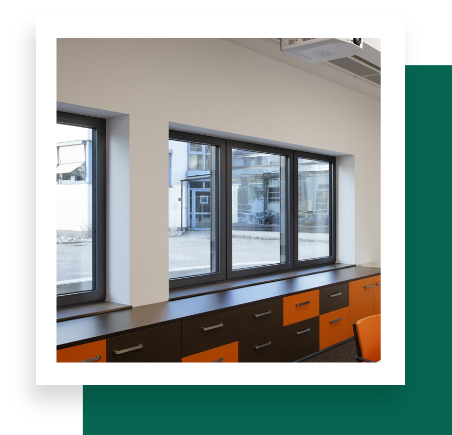
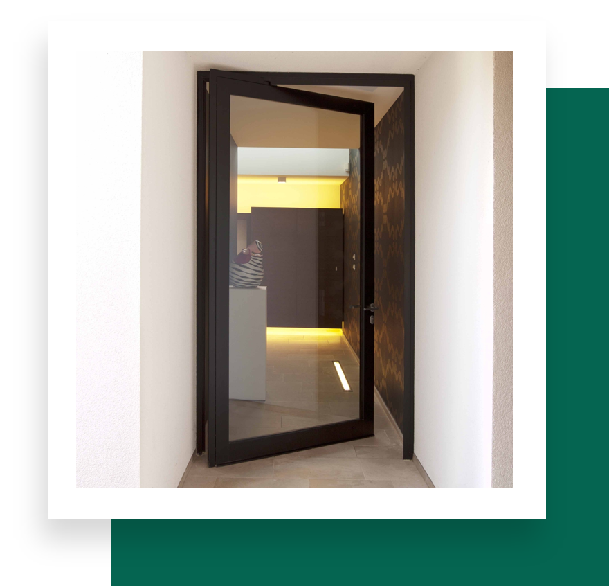
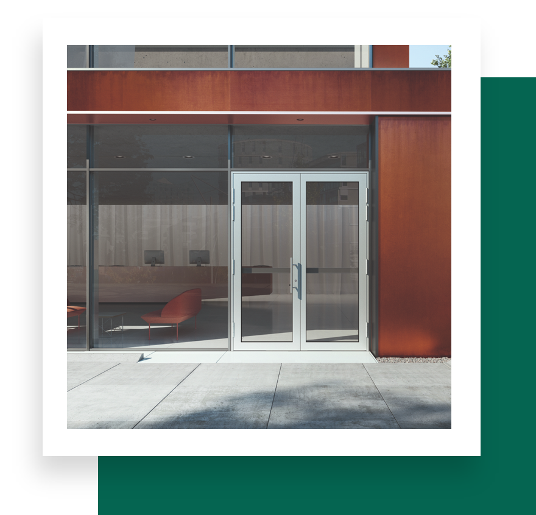

Janisol
Thermally broken door system. Premium insulated steel profiles for secure, elegant doors in challenging outdoor environments — perfect for high-traffic public spaces and sensitive areas.

Jansen Arte 15
Sleek, architectural internal door system. Interior design flexibility with glazed, flush-fitted or partially flush-fitted door options — architects can customise configurations for specific project needs.

Jansen Arte 2.0
Thermally broken window system. Meticulously crafted steel profiles tailored for industrial and loft glazing renovations, providing outstanding thermal insulation and stability with narrow profile face widths.

Jansen Economy
Non-thermally broken door system for internal use. A versatile solution for glazing and protection barriers in interior spaces, ensuring transparency and safety.

Jansen VISS
Thermally improved façade system for use in any application. State-of-the-art steel add-on construction known for outstanding thermal insulation and flexibility in new construction and renovation.
Need Help Choosing?
Our Slimline coordinator will match the right system to your project — glazing, profiles and finishes included.
Get in touch